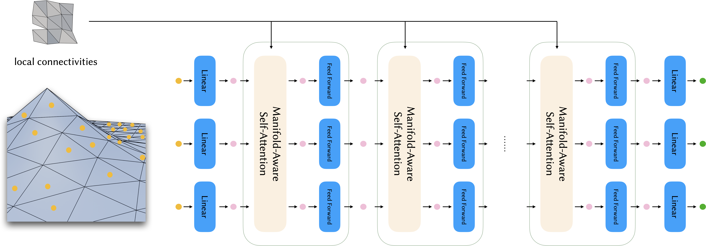
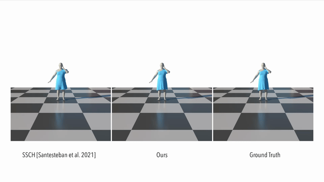

Neural Garment Dynamics via Manifold-Aware Transformers
Eurographics 2024


Paper
Code
Model
In this work, we present a manifold-aware transformer framework that can learn the dynamics of different garments driven by various unseen motions. Our network model the dynamics of a garment by exploiting its local interactions with the underlying human body, allowing us to handle different garment types, body models, mesh resolutions and local connectivities.

We start with extracting the garment features and interaction features on the garment geometry from the past frames. Our manifold-aware transformer is then applied spatially to the input features and predicts the relative deformation gradients to the next frame. An initial prediction is obtained with a Poisson solver. After the collision refinement, we get the prediction for the next frame. We auto-regressively repeat this process until the desired number of frames is reached.
The input features are extracted from the faces of the input mesh. After being projected into embedding space by a linear transformation, they are fed into the transformer encoder. Our manifold-aware self-attention layers explicitly involve local connectivities of the input geometry, making it possible to predict accurate dynamics caused by seams. The output of the transformer encoder is projected to the output features by another linear transformation. The output features are then used to predict the next frame of garment deformation.
Our method can predict the dynamics of different garments driven by various unseen motions.
Due to the nature of the feature and network design, our network can easily handle the dynamics of garments on an unseen body model.
The manifold-aware design also enables our network to handle topological cuts that cannot be reflected with only spatial features.
Here we compare our result to a supervised method. It can be seen that our method models the dynamics of a loose garment better than the baseline:
Here we compare our result to a generalizable method driven by graph convolution. It can be seen that our method generates consistent results, while the graph convolution based method suffers from unnatural artifacts due to high resolution but limited receptive field:

@article{Li2024NeuralGarmentDynamics,
author = {Li, Peizhuo and Wang, Tuanfeng Y. and Kesdogan, Timur Levent and Ceylan, Duygu and Sorkine-Hornung, Olga},
title = {Neural Garment Dynamics via Manifold-Aware Transformers},
journal = {Computer Graphics Forum (Proceedings of EUROGRAPHICS 2024)},
volume = {43},
number = {2},
year = {2024},
}